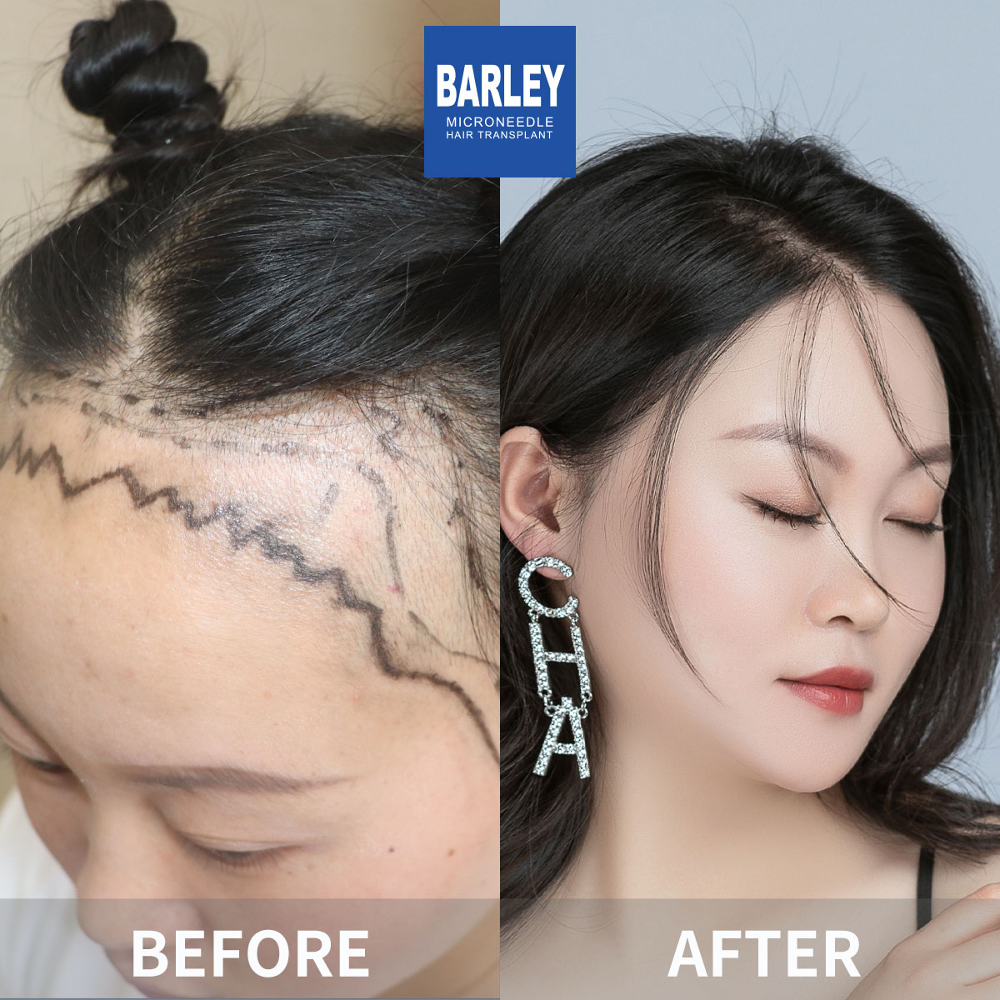

Candid, clear-cut guidance from our medical professionals to empower your decision-making
The critical numbers every prospective patient wants to know
Varies based on the graft count involved
Office workers typically return fast
Fresh strands begin emerging
Full maturation is reached
Best-in-class results, guaranteed
Transplanted hair endures for life
Explore real transformation results captured at our clinic



Genuine smiles from individuals who placed their trust in us for hair restoration

Going over outcomes with our operative team

Celebrating a fresh sense of confidence

Prepared to step out with renewed self-assurance

Final assessment before heading out

Dependable attention from first visit through healing

Outcomes that need no explanation

The instant everything clicked into place

Embarking on a fresh chapter with a full head of hair
Genuine accounts from individuals who journeyed to Beijing for their hair restoration
"I was terrified about the pain, but the FAQ section explained the anesthesia process so clearly that I felt prepared. During the procedure, I felt nothing but pressure. The recovery was easier than I expected, and the timeline matched exactly what was described. No surprises, just smooth sailing."
"The cost breakdown on this page was a game-changer. I compared prices between Turkey, the US, and China, and Barley offered the best value without compromising quality. The final invoice matched the estimate exactly—no hidden fees, no surprises. I knew exactly what I was paying for before I booked."
"I had so many questions about recovery—when I could exercise, wash my hair, return to work. The FAQ section answered every single concern, and the actual timeline matched perfectly. I was back at the gym in two weeks, exactly as promised. This page saved me from a lot of anxiety."
"Learning about shock loss beforehand completely prepared me. When I noticed shedding around week three, I wasn't panicked because I understood it was part of the process. Without that knowledge, I would have been calling the clinic in fear. This FAQ page is essential reading."
"Traveling from Karachi was a big decision, but the international patient section made everything clear. Airport pickup, hotel booking, English-speaking staff, WhatsApp support—it was all organized. I felt supported from start to finish. The visa information was especially helpful."
"I printed this FAQ page and brought it to my consultation as a checklist. Every question I had was answered in person, and my surgeon gave the same explanations. This is the most comprehensive hair transplant resource I've found anywhere. It gave me confidence to move forward."
Step inside our cutting-edge surgical center located in the heart of Beijing

Serene, comfortable post-operative environment

Contemporary and inviting entry point

Outfitted with the most advanced equipment

Unwind in our upscale waiting space

Rigorously maintained sterile conditions for peak safety

Confidential and polished one-on-one meetings
Tap to copy contact information or connect via your preferred channel
15810155700
+86 13730143529
hairtransplant@qq.com